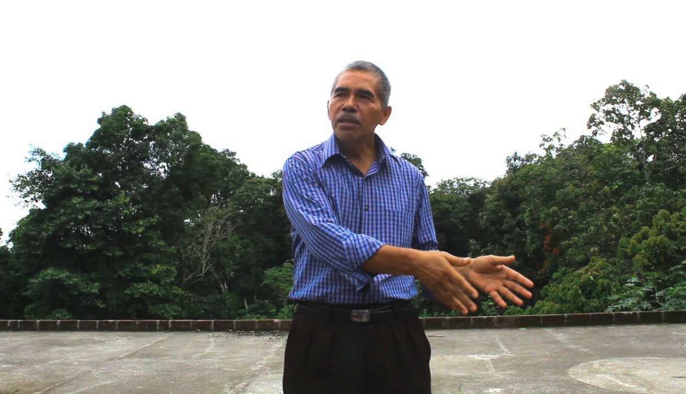
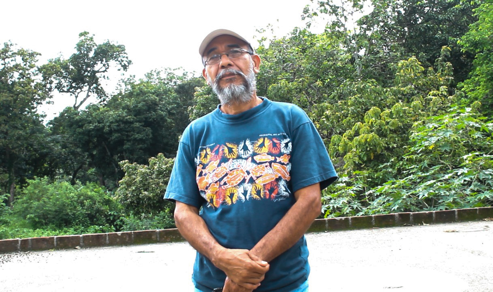

Foto por: Abigail Bolaños
¨El gobierno ya no tiene un interés en lo absoluto por rescatar el café, hasta este momento así lo hemos visto¨
La Cooperativa Arábigo ubicada en San Miguel Tepezontes, Departamento de La paz fue fundada también por caficultores de la zona para poder obtener sus ingresos. Dicha iniciativa nace a raíz de cultivar una excelente producción de café, y poder generar ingresos que ayuden a sostener a dichos caficultores. Sin embargo, manifiestan que el rubro del café ya no es de suma importancia para las instituciones gubernamentales por lo cual no reciben apoyo, por lo cual afecta al precio de sus bolsas, afirma Noé Guerrero un caficultor de dicha cooperativa.
¿A nivel empresarial la Cooperativa de Café Arábigo se considera como una micro empresa y específicamente a qué se dedica?
¨Sí, somos una micro empresa, prácticamente nosotros tenemos el rubro del café, lo cultivamos, lo procesamos y se lo vendemos al consumidor.¨
¿Cómo nace la cooperativa y han recibido alguna ayuda por parte del gobierno?
¨No. Nosotros somos una empresa privada prácticamente, esto nace de la idea de ser una organización de pequeños productores de café y por la misma situación económica que nos ha afectado los precios altos, los cambios climáticos, las plagas, aparte que los grandes y tradicionales comercializadores de café no le garantizan un precio accesible al caficultor nace la necesidad de agruparse, organizarse, legalizar todo para poder entrar al mercado y así rescatar las parcelas de café¨.
¿En la actualidad considera que el café es un rubro que debe de ser explotado?
¨Creo que debe de ser retomado nuevamente el cultivo, por que lo que ha sucedido es que se suspendieron las atenciones al café por efecto de los malos precios y las bajas cosechas¨.
¿Desde su punto de vista como empresario, qué opina sobre el desenfoque que se le ha dado al café en el país?
¨La situación se da a raíz de los ataques de las royas y brocas (plagas) hacia el cultivo y luego, viene otra enfermedad llamada antracnosis, todo esto ataca a la planta y las seca completamente. Luego tenemos la broca, que es una especie de gorgojo que pica exactamente el grano y es totalmente un daño por lo que produce una pérdida para el caficultor aparte de lo que mencionaba de los malos precios, que estos han venido a desagradar al productor por que ha estado invirtiendo más dinero para controlar plagas, y está recibiendo menos dinero por la venta de su café, esto es algo que contrasta, ya que por eso se da el abandono del cultivo¨.
¿Por qué considera que los gobiernos no han tenido un interés sobre el rubro del café?
¨El gobierno ya no tiene un interés en lo absoluto por rescatar el café, hasta este momento así lo hemos visto, pero el café todavía se mantiene en estas zonas con clima fresco; esto lo hacemos por tradición, por herencia de mantener los bosques de café y a todo esto le hemos agregado frutas, es decir diversificación de fincas ya que es la única manera de cómo se pueden mantener los bosques por que ¨puramente¨ el café, ya no es rentable¨.
¿Por qué es importante diversificar las fincas aparte de tener el cultivo del café?
¨Aquí en la zona de los Tepezontes, por lo general la mayoría de las fincas están diversificadas. En las fincas hay frutos como aguacates, mangos, guineos, limones, algunos zapotes, algunos níspero, pero siempre hay una diversificación, ahora si me pregunta el por qué es por que los precios del café, no son competentes para cubrir los gastos de los mismos mantenimientos de las fincas y de las frutas ya es otra entrada de dinero que tienen los dueños de las parcelas, también tenemos izote, esa es una ventaja de tener todo diversificado¨.
¿Consideran que es importante contar con presencia de caficultores que incluso, no son cercanos de la zona?
¨Sí, cuando existe una cooperativa y esta quiere expandirse es un poco más difícil, mientras de que si nosotros empezamos a hacer alianzas con otros caficultores donde ellos vienen aquí, y nosotros vamos allá se nos hace más fácil poder trabajar y también darle a nuestro producto un valor agregado y de eso se trata. No sé, pero hasta se puede oír feo pero en realidad nosotros hemos sido explotados en la caficultura y quiénes se han beneficiado han sido los grandes cafetaleros… ¿Y nosotros?... Pues a eso le estamos apostando¨.
¿Podría especificarnos cómo el cambio climático ha venido a afectar este rubro?
¨ El cambio climático como la falta de lluvias ¿Qué hace? A veces cuando los ciclos de lluvia se adelantan, tenemos floraciones anticipadas entonces esa floración anticipada se pierde por que se necesita de más agua para sostener la cosecha pero si el invierno se prolonga hasta noviembre la cosecha en los meses de agosto y septiembre se tiene, en si la floración comienza en febrero . Si vemos la otra parte, si el invierno comienza tarde, la planta se prepara allá por el mes de Marzo y Abril se pone lista para que pueda florecer y le cae un poco de lluvias, cosa que al final no ¨cuaja por que se ven más hojas que fruto entonces de nada sirve, el cambio climático nos está afectando si los inviernos entran antes o tardado¨.
¿Hay nuevos proyectos por formar y cómo se están llevando a cabo?
¨Sentimos que vamos creciendo para poder salir adelante y que al productor se le pueda pagar un poco más y el objetivo es eso que todos conozcan nuestro café; por tener precios de café mucho mejor que los de afuera. Por ahora, fíjese que la Alcaldía de San Juan Tepezontes nos brindará un pequeño espacio para una cafetería para Agosto, de hecho ya andamos en la gestión y pagamos un anunciador que anda en un microbús para hacer la propaganda¨.
Noé Francisco Guerrero Caficultor de la cooperativa
Foto por: Leslie García
José María Duarte - Caficultor de la cooperativa
Foto por: Leslie García